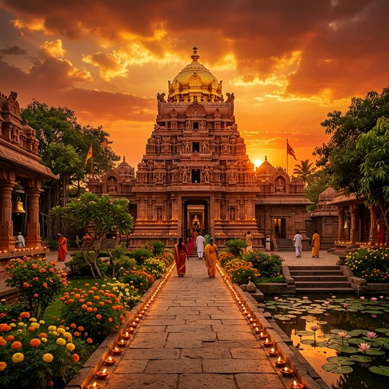
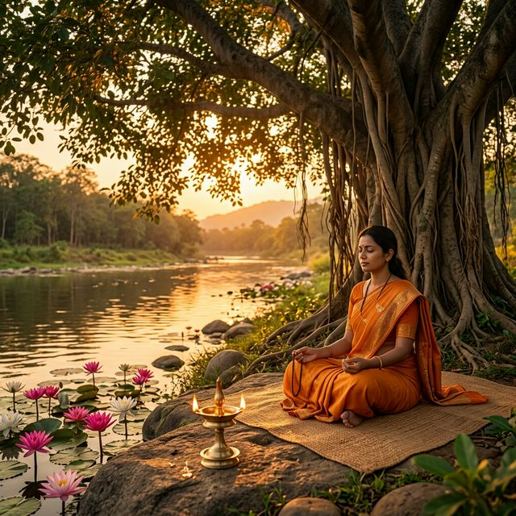

Magh Mela — Prakatya Diwas
माघ मेला — प्राकट्य दिवस
The grand annual celebration marking the divine appearance (Prakatya Diwas) of Satguru Shri Bawa Lal Dayal Ji Maharaj. Lakhs of devotees gather at Dhianpur for the sacred Mela, featuring non-stop bhajans, path, langar, and the divine Jyoti Darshan.
सतगुरु श्री बावा लाल दयाल जी महाराज के दिव्य अवतरण (प्राकट्य दिवस) को चिह्नित करने वाला भव्य वार्षिक उत्सव। लाखों भक्त पवित्र मेले के लिए धियानपुर में एकत्र होते हैं, जिसमें निरंतर भजन, पाठ, लंगर और दिव्य ज्योति दर्शन शामिल हैं।

Bhandara (Langar Seva)
भंडारा (लंगर सेवा)
Sacred community feasts organized by devotees as an offering of gratitude. Thousands of people are served blessed food (prasad) during Bhandara events, embodying the teachings of universal brotherhood and selfless service.
भक्तों द्वारा कृतज्ञता की भेंट के रूप में आयोजित पवित्र सामुदायिक दावतें। भंडारे के कार्यक्रमों के दौरान हजारों लोगों को प्रसाद परोसा जाता है, जो विश्व बंधुत्व और निस्वार्थ सेवा की शिक्षाओं का प्रतीक है।

Akhand Jyoti & Path
अखंड ज्योति और पाठ
The eternal flame (Akhand Jyoti) at Dhianpur symbolizes the undying spiritual light of Bawa Lal Ji. Special path and kirtan sessions are held on each Purnima to honor the divine presence.
धियानपुर में अनन्त लौ (अखंड ज्योति) बावा लाल जी के असीम आध्यात्मिक प्रकाश का प्रतीक है। दिव्य उपस्थिति का सम्मान करने के लिए प्रत्येक पूर्णिमा पर विशेष पाठ और कीर्तन आयोजित किए जाते हैं।
Navratri Celebrations
नवरात्रि उत्सव
Nine nights of devotion featuring special aarti, jagran, bhajan sandhya, and spiritual discourses. Devotees observe fasts and participate in collective prayers at the sacred Lal Dwara.
विशेष आरती, जागरण, भजन संध्या और आध्यात्मिक प्रवचनों के साथ भक्ति की नौ रातें। भक्त उपवास रखते हैं और पवित्र लाल द्वारा में सामूहिक प्रार्थनाओं में भाग लेते हैं।
Guru Poornima
गुरु पूर्णिमा
A day dedicated to honoring the Guru Parampara. Devotees from all 22 Gaddis gather to pay homage, participate in paduka puja, and listen to discourses on the essence of Guru-Shishya tradition.
गुरु परंपरा को सम्मानित करने के लिए समर्पित एक दिन। सभी 22 गद्दियों के भक्त श्रद्धांजलि अर्पित करने, पादुका पूजा में भाग लेने और गुरु-शिष्य परंपरा के सार पर प्रवचन सुनने के लिए एकत्र होते हैं।
Diwali & Deepotsav
दीपावली और दीपोत्सव
The festival of lights takes on special significance at Dhianpur, where thousands of diyas illuminate the sacred complex. The celebration symbolizes the inner light (Jyoti) that Bawa Lal Ji kindled in every heart.
रोशनी का यह त्योहार धियानपुर में विशेष महत्व रखता है, जहां हजारों दीये पवित्र परिसर को रोशन करते हैं। यह उत्सव उस आंतरिक प्रकाश (ज्योति) का प्रतीक है जिसे बावा लाल जी ने हर दिल में जलाया था।
For the latest event dates and announcements, follow our social media pages or contact the Dhianpur Ashram directly.
नवीनतम कार्यक्रमों की तिथियों और घोषणाओं के लिए, हमारे सोशल मीडिया पेज को फॉलो करें या सीधे धियानपुर आश्रम से संपर्क करें।
📷 Instagram 📘 Facebook